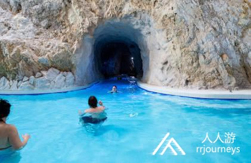
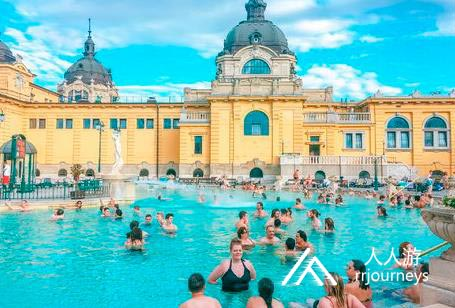
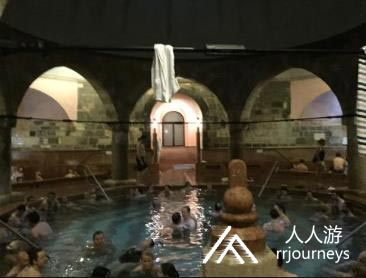

不管是酷热的夏季，还是寒冷的冬季，泡个温泉都能让人心情愉快。欧洲的温泉造型设计，地理环境，颜值及医疗效果，都是让人流连往返，回味无穷 温泉旅游是及其有吸引力的度假，有着悠久的历史和发展前途。古罗马帝国时期，罗马是第一个温泉圣地，后传到了北非海岸、德国、希腊、瑞士、土耳其以及英国。13世纪，比利时出现了欧洲大陆上的第一个温泉疗养地-列日镇，并成功的成为了世界著名的温泉胜地，现为“斯巴”。斯巴也逐渐成了温泉疗养的代词。很多温泉小镇虽然比较小，但风景却是美的冒烟儿。 
到欧洲泡温泉不得不提的就是匈牙利。这里既经济又实惠。匈牙利被称为是浮在“温泉海”上的国度。布达佩斯是世界上唯一的温泉之都，有将近100个泉眼。赫维兹是世界上最大的天然医疗温泉湖，也是世界上唯一全年开放的沐浴湖，塞切尼温泉是欧洲最大的温泉组合浴场和世界上迄今发现的最大的天然温泉溶洞，米什科尔茨是欧洲唯一的洞穴浴场。 匈牙利有1289个温泉水温超过30摄氏度，17个疗养胜地，36家温泉酒店，83家水疗，5家治愈洞穴，224种矿泉水，5种药泥沉积：215种公认的药用水。 